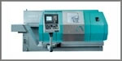
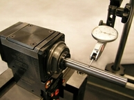
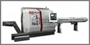

|
Um passo à
frente
O grupo INDEX é um dos maiores produtores
mundiais de tornos CNC.
A empresa foi fundada em 1914 e opera
mundialmente. Qualidade, confiança e
tecnologia estão refletidas em sua extensa
linha produtos e serviços.
Produtos
INDEX e TRAUB estão entre as
maiores fabricantes de máquinas-ferramentas
do mundo.
Nossas máquinas são desenvolvidas
inicialmente no centro tecnológico de
Baden-Württemberg, uma área considerada há
décadas como o lar da engenharia mecânica.
Em todo o mundo, nossos produtos são vistos
como garantia de qualidade, confiabilidade e
vantagem tecnológica.
A linha de produtos INDEX abrange a
produção de tornos CNC horizontais e
verticais, centros de torneamento-fresamento,
centros de torneamento e retífica e tornos
CNC multifusos.
Em 1997, a empresa TRAUB Drehmaschinen
GmbH, também famosa pela qualidade de
seus produtos, foi incorporada ao Grupo
INDEX, completando nosso portfólio com
os centros de torneamento e tornos CNC de
cabeçote móvel (swiss type).
Desta forma, a INDEX TRAUB é a única
fabricante de tornos CNC que garante uma
solução adequada para todas as aplicações de
torneamento.
Temos clientes satisfeitos não só no setor
da indústria automotiva, mas também entre
seus fornecedores, e cada vez mais em
empresas das áreas de engenharia elétrica,
tecnologia médica e indústrias de ótica e
precisão mecânica.
Além de bons contatos com universidades e
institutos de pesquisas, nosso notável
know-how tecnológico também é resultado de
um minucioso estudo da nossa produção.
Componentes que influenciam na qualidade de
nossos produtos são desenvolvidos e
fabricados pela própria empresa. A INDEX
TRAUB não é apenas uma fabricante de
máquinas, mas também é usuária de seus
próprios produtos.
Mais de 90 anos de conhecimento estão por
trás de cada uma de nossas máquinas.
Produtos
INDEX
Desde o início da engenharia mecânica
moderna, numerosas patentes e novas
tecnologias podem ser atribuídas às
inovações desenvolvidas pela INDEX.
Talvez essa seja a razão da superioridade de
nossas máquinas.
Nosso objetivo é construir os melhores
tornos com o melhor desempenho.
Veja a seguir nossa linha de produtos.
Tornos
automáticos CNC
Rápidos e precisos, os tornos automáticos
INDEX são feitos especialmente para
produzir peças típicas de torno e peças
muito complexas.
A flexibilidade da tecnologia CNC, combinada
com a alta velocidade dos tornos automáticos
clássicos, permitem a produção de lotes
pequenos ou médios a custos competitivos.
MC200
Torno CNC altamente produtivo
• Fuso principal com passagem de 42 mm
• Cabeçote revólver e contraponto
• Trabalha com barra ou placa
MC400
Torno CNC altamente produtivo
• Fuso principal com passagem de 42 ou 65 mm
• Cabeçote revólver e contraponto
• Trabalha com barra ou placa
ABC
Torno CNC Compacto
• Fuso principal com passagem de 42, 60 ou
65 mm
• Dois cabeçotes revólver com eixos X e Z, e
fuso síncrono
• Sistema de manipulação de peças ou
magazine alimentador de barras
C100
Torno CNC para a produção de peças
complexas
• Fuso principal e contrafuso com passagem
de 30 ou 42 mm
• 3 cabeçotes revólver e 2 eixos Y
• Sistema inovador de guias INDEX
SingleSlide
C200
Torno para produção de peças complexas
• Fuso principal e contrafuso com passagem
de 65 ou 90 mm
• 3 cabeçotes revólver e 2 eixos Y
• Sistemas inovador de guias INDEX
SingleSlide
Tornos CNC
universais
Os tornos universais são ideais para a
produção de peças de grandes dimensões com
rigidez, estabilidade e precisão em
operações com alta potência. Podem trabalhar
com barras, placas ou eixos.
As máquinas são equipadas para usinagem
completa, flexibilizando e aumentando a
produção de forma econômica.
Além disso, possuem baixo custo de
preparação, tempos reduzidos de setup e alta
remoção de cavacos.
IT600
Um novo conceito para uma usinagem
completa
• Fuso principal com passagem de 65 mm
• Comprimento de torneamento máx. 600 mm
• Duas versões disponíveis: com cabeçote
multifuncional ou com contraponta
programável
GU800 / GU800L
Torno CNC universal altamente robusto
• Fuso principal com passagem de 65 mm
• Comprimento de torneamento max. 820 / 1400
mm
• 1 cabeçote revólver com eixos X e Z
GU1500
Torno CNC universal com alta estabilidade
e rigidez
• Fuso principal com passagem de 100 mm
• Comprimento de torneamento max. 1500 mm
• 1 cabeçote revólver com eixos X e Z
Centros de torneamento e fresamento
Os centros de
torneamento e fresamento INDEX são
referências em economia e alta precisão,
proporcionando soluções adaptadas às
necessidades de cada cliente.
Os padrões INDEX abrangem desde o
clássico torno CNC até os modernos centros
de usinagem fabricados sob medida.
A INDEX sempre oferece alternativas
econômicas e técnicas mais vantajosas para a
sua usinagem.
R200
Centro de
torneamento e fresamento para fresar e
tornear em uma nova dimensão
• Fuso principal e contrafuso com passagem
de 65 mm
• Duas unidades de fresamento para trabalhar
com 5 eixos programáveis
• Curso em Z do fuso principal de 390 mm
R300
Centro de
torneamento e fresamento para fresar e
tornear em uma nova dimensão
• Fuso principal e contrafuso com passagem
de 102 mm
• Duas unidades de fresamento para trabalhar
com 5 eixos programáveis
• Curso em Z do fuso principal de 610 mm
G200
Centro de
torneamento e fresamento para usinagem
completa das peças
• Fuso principal e contrafuso com
passagem de 42, 60 e 65 mm
• Dois cabeçotes (X, Z, Y, B), sistema de
fresamento
• Comprimento torneável de 400 mm
G300
Centro de
torneamento e fresamento para usinagem
completa das peças
• Fuso principal e contrafuso com
passagem de 65, 90 e 102 mm
• Três cabeçotes (X, Z, Y, B), sistema de
fresamento
• Comprimento torneável de 710 ou 1250 mm
G160

Centro de
torneamento e fresamento para usinagem
completa das peças
• Fuso principal e contrafuso com
passagem de 42 e 65 mm
• Três cabeçotes (X, Z, Y, B), sistema
multifunção ou unidade de fresamento
• Comprimento torneável de 800 mm
G250
Centro de
torneamento e fresamento de alta
produtividade
• Fuso principal e contrafuso com
passagem de 65, 90 e 102 mm
• Três cabeçotes revólver (X, Z, Y, B),
sistema multifunção ou unidade de fresamento
• Comprimento torneável de 800 ou 1400 mm
G400
Centro de
torneamento e fresamento de alta
produtividade
• Fuso principal e contrafuso com
passagem de 90 e 102 mm
• Três cabeçotes revólver (X, Z, Y, B),
sistema multifunção ou unidade de fresamento
• Comprimento torneável de 1250 ou 2000 mm
Centros de torneamento vertical
Os centros de
torneamento vertical INDEX atendem
todas as exigências de uma produção
econômica e flexível.
O motor móvel do fuso vertical realiza as
funções “Manipulação” e “Usinagem”.
Pequenas distâncias combinadas com
velocidades transversais rápidas reduzem
drasticamente os tempos não produtivos.
V100
Torno
vertical de alta precisão
• Placa de fixação até diâmetro de 130
mm
• Mesa de ferramentas, cabeçote revólver ou
fuso para retífica
• Alta precisão com sistema de cinemática de
barras
V160C
Torno
vertical
• Placa de fixação de diâmetro até 200
mm
• 3 cabeçotes revólver
• Equipamento para tornear e retificar
V160G
Centro de
torneamento vertical com contrafuso
• Placa de fixação de diâmetro até 200
mm para o fuso principal e contrafuso
• 2 carros com até 4 cabeçotes revólver
• Eixos Y e B para usinagens complexas
Tornos multifusos
O Multifuso
INDEX combina as vantagens da tecnologia
CNC com as máquinas automáticas.
Eles podem ser usados não só para produção
em série de uma alta gama de peças que
exigem grande precisão, mas também para
pequenos lotes, devido a sua configuração
com tempos extremamente curtos de setup.
Seja qual for sua aplicação, os tornos
multifusos impressionam por sua
rentabilidade.
MS16C
Multifuso
CNC com maior dinamica e tempos secundarios
reduzidos!
• 5 motores integrados com passagem de
16 mm
• 06 carros transversais nos eixos X e Z
• Alta dinamica nos fusos sincronos
MS32P
Multifuso
CNC para peças complexas
• 6
motores integrados com passagem de 32 mm
• 17 carros porta ferramentas, eixo Y
• Um contra fuso para usinagem posterior
MS32G
Multifuso
CNC para peças complexas com usinagem
posterior
• 6
motores integrados para o fuso principal e
contra fuso com passagem de 32 mm
• 18 carros porta ferramentas, eixo Y
• Para trabalhar com alimentador de barras
ou sistema de carregamento manual
MS40C
Multifuso CNC com abertura frontal
• 6 motores integrados com passagem de
40 mm
• 12 carros porta ferramentas, eixo Y e
síncrono
• Usinagem do lado posterior com até dois
fusos-síncronos
MS40P
Multifuso CNC para peças complexas
• 6 motores integrados com passagem de
40 mm
• 18 carros porta ferramentas, eixo Y
• Um contra fuso para usinagem posterior
MS52C
Multifuso CNC com abertura frontal
• 6 motores integrados com passagem de
52 mm
• 12 carros porta ferramentas, eixo Y e
síncrono
• Para trabalhar com alimentador de barras
ou Robô
MS52G
Multifuso CNC para peças exigentes com
usinagem posterior
• 6 motores integrados para o fuso
principal e contra fuso com passagem de 52
mm
• 18 carros porta ferramentas, eixo Y
• Para trabalhar com alimentador de barras
ou sistema de carregamento manual
Centros de torneamento e
retífica
Os centros de torneamento e retífica
combinam as vantagens de um processo de
torneamento e retífica, tais como ciclos de
tempos reduzidos, alta qualidade e segurança
máxima do processo.
Além disso, os benefícios do conceito de
rigidez da máquina, projetado para processos
com altas forças durante o torneamento e o
fresamento, garante tolerâncias milesimais.
C200 - Centro de Torneamento e
Retífica Horizontal

O centro de torneamento e retífica
horizontal INDEX C200 foi desenvolvido
especialmente para a retífica de peças do
tipo flange/eixo combinadas com torneamento
duro. A automação opcional possibilita
reduções no tempo de troca da peça e
intervenções manuais.
R200 - Centro de Torneamento e
Retífica Horizontal
O centro de torneamento e retífica
horizontal INDEX R200 foi desenvolvido
especialmente para a retífica de peças com
alta demanda de usinagem frontal e
posterior. Operações muito complexas de
retífica são possíveis devido à cinemática
de 5 eixos.
V160C - Centro de Torneamento e
Retífica Vertical
Os centros de torneamento e retífica
verticais da série V foram desenvolvidos
para a usinagem de bicos injetores,
componentes para a tecnologia de injeção de
diesel, interfaces de ferramentas HSK,
componentes hidráulicos que requerem alta
qualidade de acabamento de superfície e
peças dentadas.
Suportes de ferramentas INDEX
para retífica

Transforme seu torno INDEX em uma máquina de
retífica com suportes de ferramentas
especiais para retífica. Precisos e fáceis
de instalar. O uso de suportes de
ferramentas para retífica é adequado para
retífica cilíndrica externa e interna.
Suportes de ferramentas INDEX para retífica
Graças a sua estrutura rígida, alta
precisão, os tornos INDEX são ideais
para o uso de suportes de ferramentas de
retífica.
• Ótimas condições para um processo de
usinagem completo e seguro
• Reduz as operações de retífica em outra
máquina
• Redução nos tempos de ciclos
• Evita diversas operações de fixação
• Ciclos de retífica também com os eixos Y e
B (com fuso de fresamento com motor
integrado ou unidade multifuncional)
• Retífica externa, de face, de ranhura e
plana
VirtualLine
Excelentes soluções de softwares para os
tornos INDEX
Virtual Machine
A Virtual Machine é uma solução em software
que contém praticamente toda a
funcionalidade da máquina INDEX e a
complementa com componentes adicionais.
Tanto ao se programar diretamente na máquina
ou utilizando um sistema CAM, você simula
exatamente como na usinagem real. O software
utiliza os dados originais do software
Siemens, do comando e da geometria da
máquina.
VirtualPro
VirtualPro é o novo suporte de programação
para os tornos INDEX. Um grande número de
telas, seqüências parametrizadas e funções
geométricas simplificam a programação
consideravelmente. Você chega ao programa de
peças desejado com mais rapidez e segurança.
Suporte de ferramentas
Definitivamente um investimento inteligente
– Suporte de Ferramentas direto do
fabricante da máquina. Você já comprou uma
máquina de nossa empresa e está procurando o
suporte de ferramenta adequado? Temos, sem
dúvida, o suporte de ferramenta que você
procura; uma solução ideal e de baixo custo.
Competências
Inovação
Nossos engenheiros têm uma larga
experiência e sempre surpreendem com idéias
inovadoras. As soluções, muitas vezes
patenteadas, tornam-se padrões e mostram
tudo que pode ser feito tecnicamente.
Qualidade
Nosso setor de pesquisa e
desenvolvimento, os componentes de alta
qualidade e as sugestões dos clientes são
fatores fundamentais para garantir nosso
elevado nível de qualidade. Antes de um
suporte de ferramentas ser entregue, ele
também passa por elaborados processos de
testes.
Diversidade
Aplicações
Em nossa empresa, soluções práticas e
criativas tornaram-se um padrão de
qualidade. Os suportes de ferramentas, que
perfeitamente adaptados às nossas máquinas,
são garantia de peças de alta qualidade e
processos de torneamento seguros.
Idéias
Se o produto solicitado não estiver
disponível em nossa variada linha de
produtos, nossos engenheiros irão encontrar
a solução ideal para suprir suas
necessidades.
Assistência técnica

Reparos
Você já comprou um suporte de ferramenta
INDEX e precisa substituí-lo? Então, é
importante saber que você tem um parceiro
forte ao seu lado, a INDEX TRAUB, sempre
efetuando reparos rápidos e confiáveis.
Produtos TRAUB
Na TRAUB,
consideramos que nossa maior obrigação é
servir nossos clientes. A TRAUB
alcançou sua reputação como uma das maiores
líderes de fabricantes de tornos CNC e
centros de torneamento e fresamento não só
por ter adquirido vantagem tecnológica e
excelência, mas também pelo desenvolvimento
de uma extensa linha de produtos e serviços.
Aqui você encontra uma breve apresentação de
nossa competitiva linha de
máquinas-ferramentas.
Tornos Universais
A linha TNA da TRAUB tem uma
excelente reputação mundial na usinagem de
grandes peças de blank, de eixo e de barras.
Através de precisão, eficiência, tempos de
ciclo curtos e fácil operação essas máquinas
têm estabelecido um novo padrão de tornos.
As máquinas podem ser adaptadas a qualquer
tipo de exigência.
Tornos de cabeçote móvel automático
Os cabeçotes móveis automáticos da TRAUB
são projetados para uma produção precisa de
peças longas e finas, com um diâmetro máximo
de 32 mm. As diversas opções de configuração
e a produção de peças extremamente pequenas
e precisas são apenas algumas das demandas
do cabeçote móvel automático. A série TNL é
caracterizada por seu alto desempenho e
grande facilidade de configuração e
programação. As máquinas são baseadas em um
sistema modular com até quatro
portas-ferramentas independentes.
Torno monofuso de barras
Os tornos monofusos de barras TRAUB
são adequados para a usinagem de peças
curtas, com diâmetro de até 36 mm, em
qualquer nível de complexidade. Ótima
acessibilidade, fácil programação e
poderosos motores são apenas alguns dos
recursos que caracterizam a série TNK. O uso
de simulações com até quatro ferramentas
fornece uma alta produtividade.
Centros de torneamento-fresamento
Os tornos de torneamento-fresamento da Traub
destinam-se a uma usinagem completa de peças
complexas em uma única máquina. Operações de
torneamento e fresamento, como a
implementação de outros processos de
usinagem, torneamento de polígono,
fresamento ou a integração de usinagem a
laser, demonstram as possibilidades desta
linha de produtos. O fator preponderante não
é o grande número de opções, mas sim o lucro
que você obtém. Você paga apenas por aquilo
que você precisa.
TX8i control Series
O desempenho de uma máquina-ferramenta
moderna não depende apenas de uma construção
bem elaborada, mas também, em grande parte,
de seu controle CNC. A Traub percebeu isto
rapidamente e por isso que desenvolve os
seus próprios conceitos de controle
integrados com PC, definindo assim novos
padrões. Sendo assim, o usuário, o
desempenho e a compatibilidade dos programas
CNC têm sido sempre os focos de nossa
engenharia.
Sistemas de programação e simulação
Para uma programação confortável a TRAUB
oferece o WinFlexIPS. Este sistema inovador,
que é executado na máquina e no PC, dá a
você a oportunidade de programar durante o
tempo ocioso. Graças a isso, a rentabilidade
do seu torno CNC aumentará
consideravelmente.
Suporte de ferramentas
Definitivamente um investimento inteligente
– Suporte de Ferramentas direto do
fabricante da máquina. Você já comprou uma
máquina de nossa empresa e está procurando o
suporte de ferramenta adequado? Temos, sem
dúvida, o suporte de ferramenta que você
procura; uma solução ideal e de baixo custo.
Tornos de cabeçote móvel automático
Os cabeçotes móveis automáticos da TRAUB são
projetados para uma produção precisa de
peças longas e finas, com um diâmetro máximo
de 32 mm. As diversas opções de configuração
e a produção de peças extremamente pequenas
e precisas são apenas algumas das demandas
do cabeçote móvel automático. A série TNL é
caracterizada por seu alto desempenho e
grande facilidade de configuração e
programação. As máquinas são baseadas em um
sistema modular com até quatro
portas-ferramentas independentes.
TNL12
Alta precisão
na tecnologia de cabeçote móvel até 16 mm no
diâmetro de passagem, com máximo de quatro
carros porta-ferramentas e conceito inovador
de controle.
TNL18P
Torno CNC de cabeçote móvel com passagem de
árvore de até 20 mm.
TNL18
Torno automático CNC com diâmetro de até 20
mm para usinagem com e sem bucha de guia.
TNL 32P

Torno de cabeçote móvel com diâmetro de até
20 mm para torneamento com ou sem bucha de
guia.
TNL32
Torno de cabeçote móvel com diâmetro de até
32 mm para torneamento com ou sem bucha de
guia.
|
|